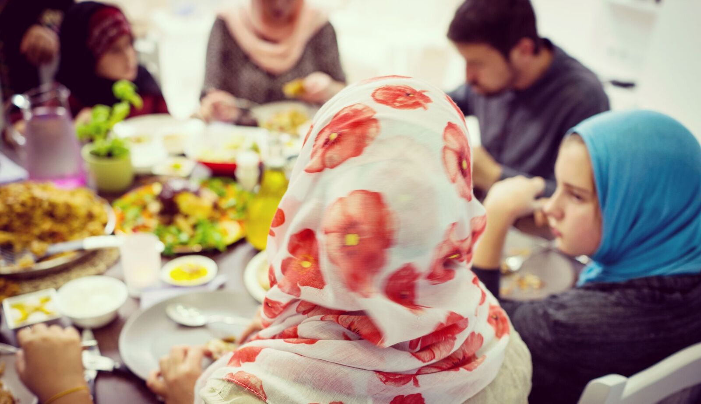

Learn more about BYU's Interfaith Student Association
The Family in Islam!
The family life in Islam is very structured and has principles and rules to follow. First, we'll start with marriage. For them, marriage is a civil contract where there exists mutual consent and public declaration of the marriage. There is nothing religious about these ceremonies, but once two individuals get married, there are roles and a scheme that must be followed.
The structure of the family is three fold. The first and the closest consists of the husband, the wife, their children, their parents who live with them, and servants, if any. The next group, the central fold of the family, consists of a number of close relatives, whether they live together or not, who have special claims upon each other, who move freely inside the family, with whom marriage is forbidden and between whom there is no hijab (veil).
Role of Fathers and Mothers
In the internal organisation of the family, a man is in the position of the head and the over-all supervisor. In fact it is the eldest member of the extended family who occupies the position of the head. A man's major responsibilities lie outside the family. He is to support the family economically and materially, he has to look after the relations of the family with the rest of the society, economy and policy and he has to take care of the demands of internal discipline within the family.
A woman's major responsibilities lie within the family. Here too, the eldest woman is regarded as the centre of the family organisation but within each circle and fold the relative central position is enjoyed by that woman who constitutes its core. A spectrum of mutual rights and responsibilities has been evolved in such a way that balanced relationships are developed between all.
Source: Family Life in Islam (THE FAMILY IN ISLAM: STRUCTURE, PRINCIPLES AND RULES) by Khurshid Ahmad